E3 · feature/e3-ourspaces-visual-kit. The inherited design DNA, documented for E1/E2: palette roles, material frames, textures, sticker grammar, type, avatar treatment and cursor mapping. Rule: new art sits inside these frames — never re-skinned components. Source of truth: OURSPACES_FIDELITY_CONTRACT.md, ASSET_AND_FLORA_BRIEF.md.
Ink is structural (outlines, pills, dock). Cream/paper is content ground. Lime is action/active state only — never a dialog body. Scene accents (violet/pink/orange/blue/teal) carry subject + mood variety. Sticker cream #E8DDC0 is reserved for die-cut borders (Sticker P, stickers).
Cursor accents are exactly IDENTITY_COLORS in src/live/identity.ts: violet, pink, orange, blue, teal, lime, amber, red — one per persona.
Four physical primitives carry the whole UI. New illustration must be drawn to fit inside them, not replace them.
2–3px ink outline · 6–8px offset ink shadow (bottom-right) · ±1–2° tilt · optional tape strip · warm cream fill. Reading cards stay level; notes may tilt.
Existing upstream assets — reuse before generating. Audit flag: upstream-provenance, MIT-covered in repo; verify before external marketing reuse.
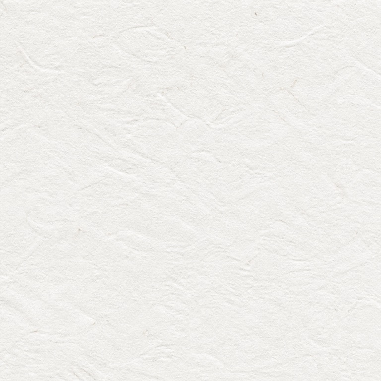
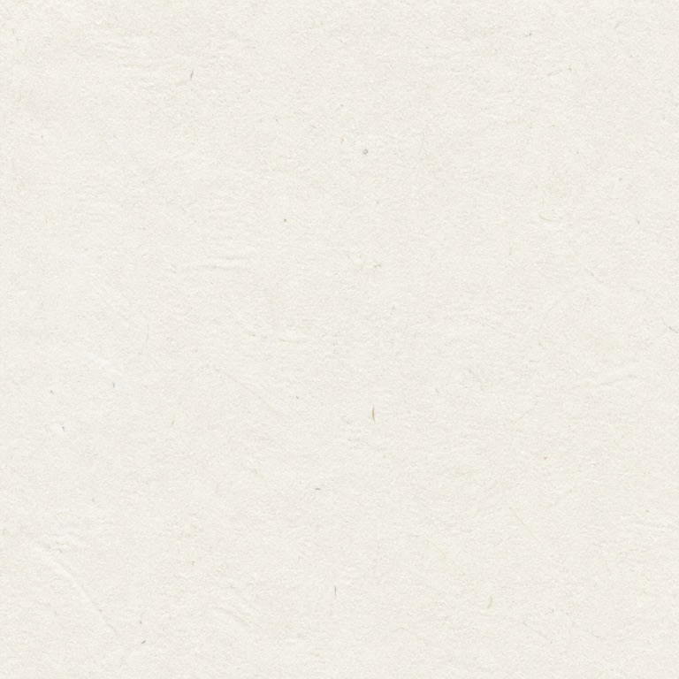
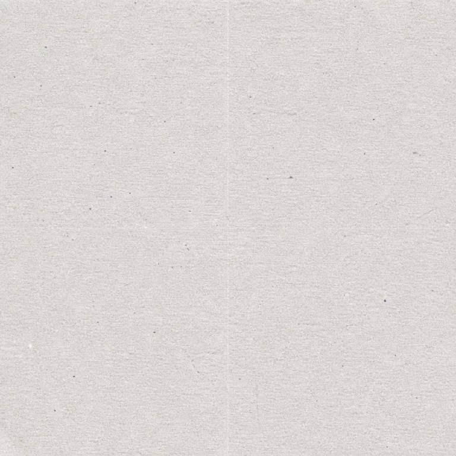
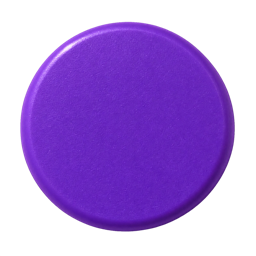
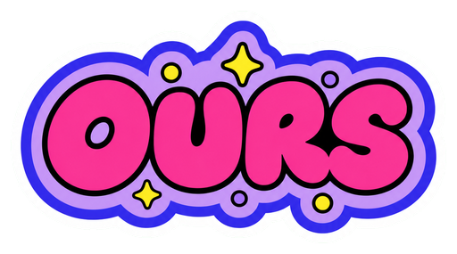
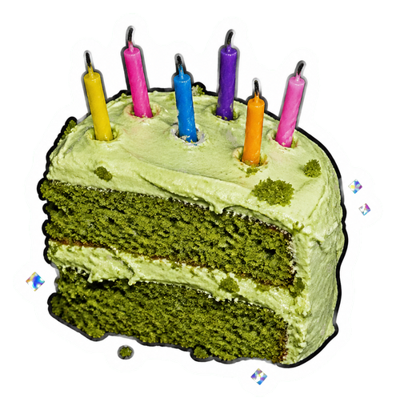
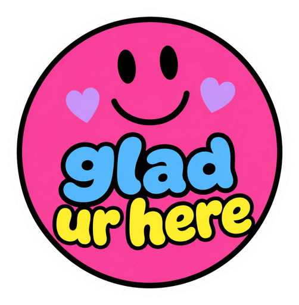
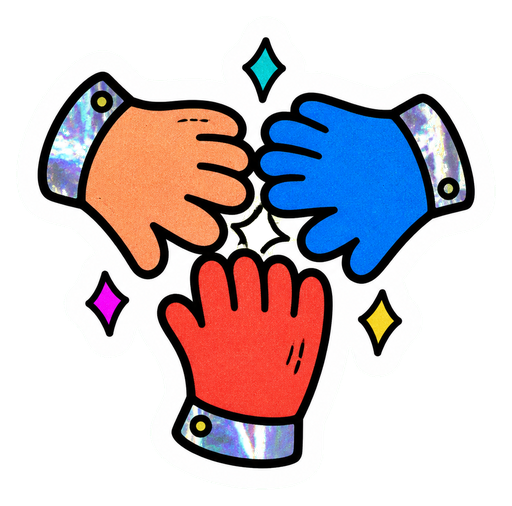
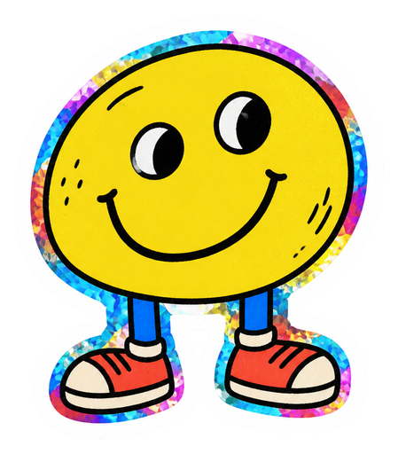
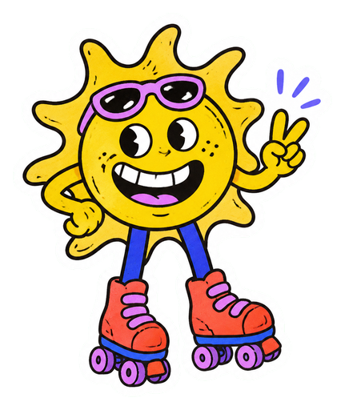
| Family | Files | Visual rule |
|---|---|---|
| Textures | public/assets/textures/* | warm paper grain, torn edges, ledger print — subtle, never below body text |
| Stickers | public/assets/stickers/* (18) | die-cut border, tilt, single bold motif, photo+illustration mix |
| Space covers | public/assets/space-covers/* | photo collage cutouts w/ paper frames |
| Brand | public/assets/pearnotes-*.svg | Sticker P only — approved, do not alter |
28-person catalog (src/data/avatars.ts); the eight VISITOR_AVATAR_NAMES personas are the canonical set. Style: soft 3D clay/plasticine head-and-shoulders, matching outfit+background color story, expressive friendly face, centered circular crop.
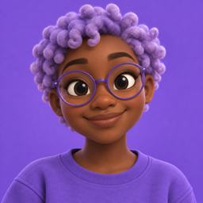
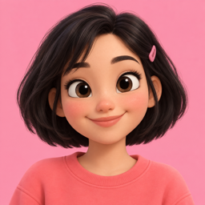
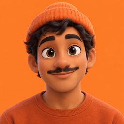
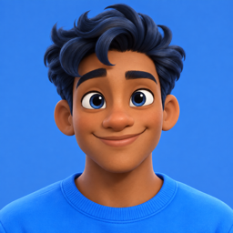
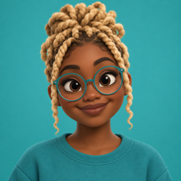
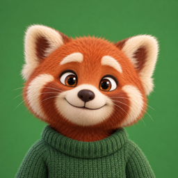
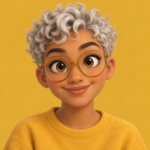
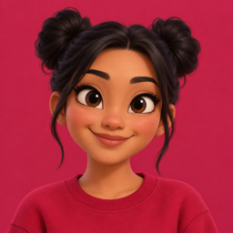
| Rule | Spec |
|---|---|
| Selection ring | 4–6px lime ring outside the disc (see momo) — ring never clips face |
| Cursor | native OurSpaces pointer + face-chip in persona accent color; initials or tiny face — not a redrawn arrow |
| Face chip | persona bg color = cursor accent (mapping above); survives at 32px |
| Crop | head+shoulders, eyes upper-third, ~15% breathing room inside circle |
| New personas | must match clay finish, lighting, line weight, mono bg+outfit — one cast, not mixed models |